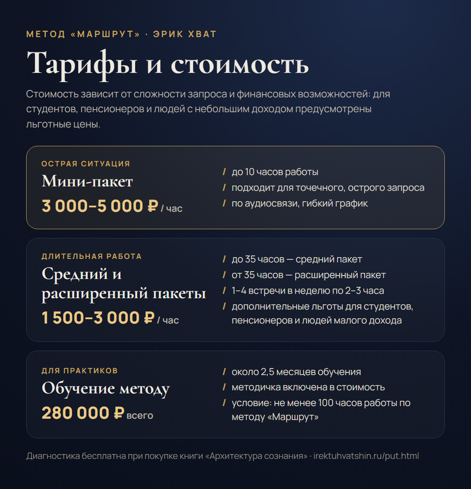
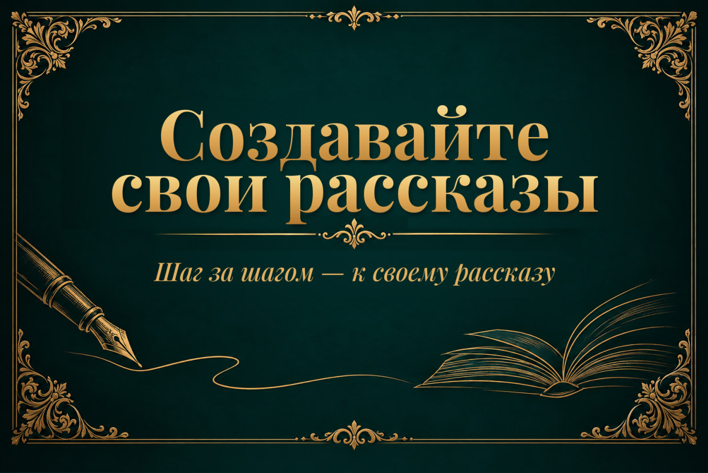
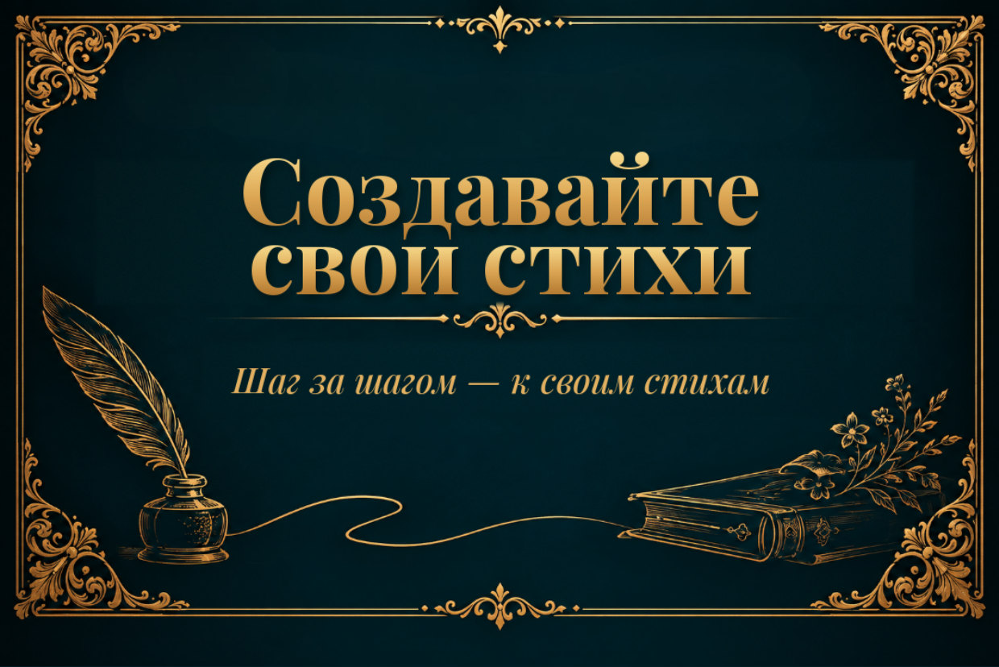
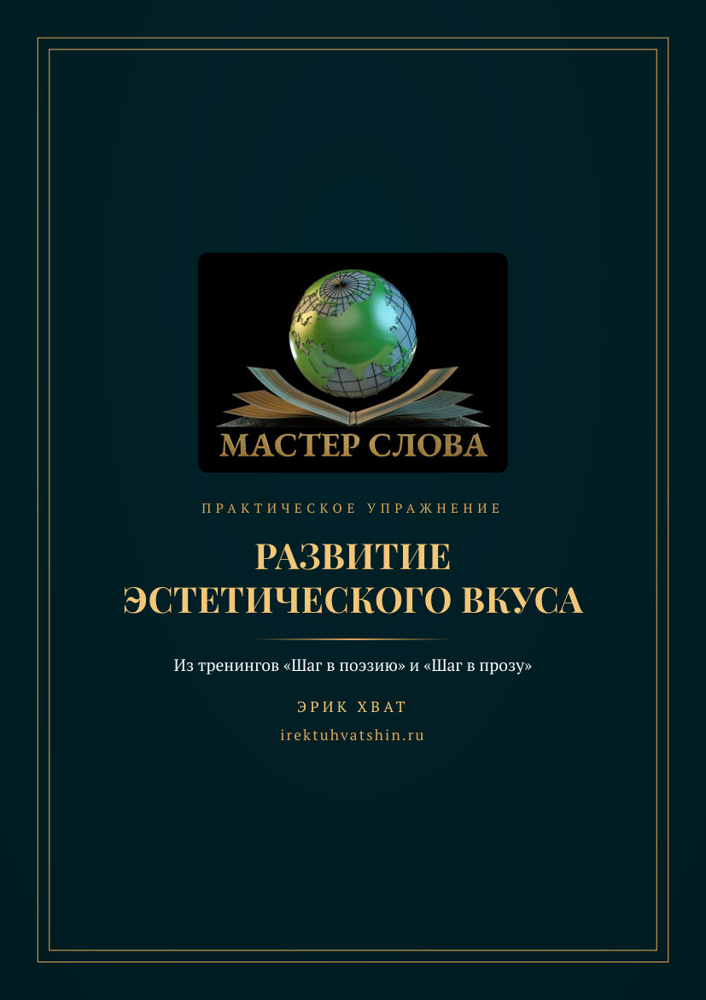

Черновик текстов для разделов «Услуги» и «Товары» в сообществе «Вселенная ТИР». Здесь видно, как будет выглядеть каждая карточка: название, цена, описание, кнопка. Пожалуйста, посмотрите и напишите, что поправить. В ВКонтакте ничего не создаётся, пока Вы не подтвердите тексты.
1
Диагностика
бесплатна при покупке книги «Архитектура сознания»
Эта встреча проходит со мной. На ней мы определим суть Вашего запроса и выясним, какая часть внутреннего механизма даёт сбой и мешает достигать устойчивых результатов.
Диагностику провожу онлайн, в формате аудиозвонка.
Если Вам нужна моя помощь, на диагностике мы обсудим индивидуальный план.
Если Вашему случаю нужен другой специалист, я честно об этом сообщу.
Диагностику предоставляю в подарок за покупку моей книги «Архитектура сознания».
2
Метод «Маршрут»
от 1 500 ₽ в час

Это моя авторская методика восстановления сознания в шесть этапов:
• 1. диагностика проблемы;
• 2. составление запроса на разрешение этой проблемы;
• 3. восстановление способности ясно смотреть на эту проблему;
• 4. очистка умственных программ от эмоциональных зарядов и чужого мнения;
• 5. восстановление этих умственных программ;
• 6. проверка результата работы.
Методика помогает разобраться, почему Вы застреваете в одних и тех же ситуациях, и возвращает способность выбираться из них самостоятельно.
Острая ситуация: мини-программа 3 000–5 000 ₽/час, до 10 часов.
Хроническая проблема: 1 500–3 000 ₽/час, средняя программа около 35 часов.
Для студентов, пенсионеров и людей с небольшим доходом есть льготные цены.
Предоставляю услугу только по аудиосвязи.
3
Песня на заказ
индивидуально
Пишу песни и музыку на заказ для певцов и музыкантов, диджеев, ресторанов, киностудий, рекламных и туристических компаний, производителей смартфонов (рингтоны).
Не занимаюсь рутинными поздравлениями: работаю с теми, кому нужна атмосферная авторская композиция.
Процесс создания композиции: техническое задание, текст, музыка, демо, правки, финал.
Стоимость обговариваем в ходе согласования технического задания, до начала работы.
4
Обучение «Шаг в поэзию»
скидка 10% для тех, кто купил гайд по поэзии
Это мой авторский тренинг для желающих начать писать стихи или улучшить свои поэтические навыки в пять этапов:
• 1. разбор терминологии;
• 2. создание проекта будущего стихотворения;
• 3. написание стихотворения;
• 4. финальная редактура;
• 5. завершение (отзыв, именная грамота, публикация в соцсетях и на Стихи.ру).
Тренинг зарегистрирован как ноу-хау (ЕДРИД № 220.018.15E6, 21.04.2020).
Гарантированный итог: Ваше собственное законченное стихотворение и именная грамота.
Подходит любому уровню, опыт не обязателен.
P.S. Тренинг временно не предоставляю. Уточняйте срок запуска онлайн-школы.
5
Обучение «Шаг в прозу»
скидка 10% для тех, кто купил гайд по прозе
Это мой авторский тренинг для желающих начать писать художественные рассказы или улучшить свои писательские навыки в пять этапов:
• 1. разбор терминологии;
• 2. создание проекта будущего рассказа;
• 3. написание рассказа;
• 4. финальная редактура;
• 5. завершение (отзыв, именная грамота, публикация в соцсетях и на Проза.ру).
Тренинг зарегистрирован как ноу-хау (ЕДРИД № 220.018.15E7, 21.04.2020).
Гарантированный итог: Ваш собственный законченный рассказ и именная грамота.
Подходит любому уровню, опыт не обязателен.
P.S. Тренинг временно не предоставляю. Уточняйте срок запуска онлайн-школы.
6
Лицензия на песню или музыку
индивидуально
Выберите готовую песню или композицию на витрине и получите право исполнять её и выпускать под своим именем.
Лицензия неисключительная: все права на произведение остаются у меня, артист получает право исполнять и выпускать песню в своём исполнении.
Моё авторство указывается везде: «Музыка и текст — Тухватшин Ирек Равилович (Эрик Хват)».
Условия передачи произведения обсуждаем индивидуально.
1
Книга «Архитектура сознания»
700 ₽
Электронная книга (PDF) об устройстве сознания: метод «Маршрут» и 32 пары фундаментальных программ сознания, в которых находят отражение вопросы существования человека и механизмы принятия решений.
В подарок при покупке книги предоставляется индивидуальная диагностика со мной.
Оплата книги производится картой или через СБП, без VPN.
Ссылка на файл придёт на e-mail, который Вы укажете при оплате.
Купить

2
Гайд «Создавайте свои рассказы»
650 ₽
Семь понятий, на которых держится рассказ, и шесть шагов от темы и замысла до редактуры.
Скидка 10% на тренинг «Шаг в прозу» после его запуска.
Ссылка на файл придёт на Ваш e-mail после оплаты.
Купить

3
Гайд «Создавайте свои стихи»
550 ₽
Восемь заблуждений, которые мешают писать стихи, с упражнениями к каждому, и пять шагов от мысли к стихотворению.
Скидка 10% на тренинг «Шаг в поэзию» после его запуска.
Ссылка на файл придёт на Ваш e-mail после оплаты.
Купить

4
Упражнение «Развитие эстетического вкуса»
500 ₽
Девять шагов наблюдения за предметом и пять заданий для творчества.
Из тренингов «Шаг в поэзию» и «Шаг в прозу». PDF на 9 страниц.
Ссылка на файл придёт на Ваш e-mail после оплаты.
Купить
5
Комплект: гайд по прозе + упражнение
950 ₽
«Создавайте свои рассказы» и «Развитие эстетического вкуса».
Вместе 1 150 ₽, по комплекту 950 ₽: экономия 200 ₽.
Скидка 10% на тренинг «Шаг в прозу» после его запуска.
Купить
6
Комплект: гайд по поэзии + упражнение
900 ₽
«Создавайте свои стихи» и «Развитие эстетического вкуса».
Вместе 1 050 ₽, по комплекту 900 ₽: экономия 150 ₽.
Скидка 10% на тренинг «Шаг в поэзию» после его запуска.
Купить